|
|
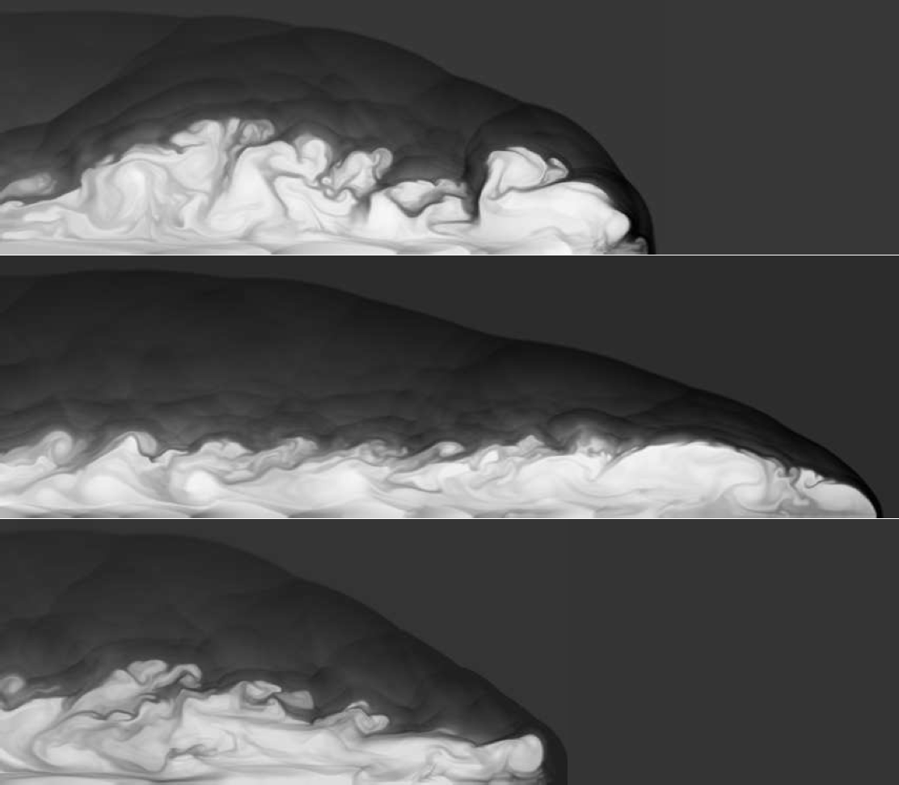
Density greyscale of an axisymmetric simulation (top half only shown) of a propagating jet (M=10, η=0.1) from left to right with: (top) passive magnetic field; (middle) strong toroidal field (β=0.2); and (bottom) strong poloidal field (β=0.2) all after the same propagation time. In 2-D, a toroidal field enhances propagation speed, a poloidal field impedes it.
Next slide in 10 seconds...
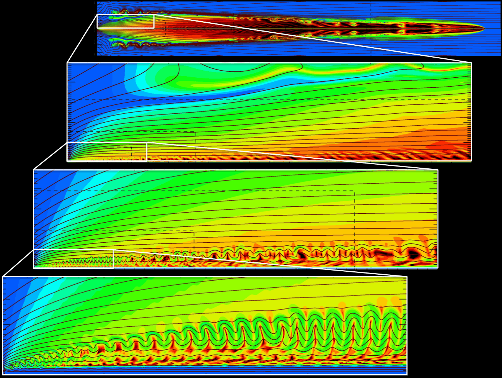
The maiden AZEuS simulation showing the Alfvénic Mach number (colours) and magnetic field lines of a protostellar jet with eight levels of refinement. This is the first simulation to follow a magnetocentrifugally launched jet (at resolution 0.00625 AU) to observational scales (2,000 AU) where the jet takes on its familiar bow-shock led morphology. See Ramsey & Clarke for details.
Next slide in 10 seconds...
Line-of-sight integration of the pseudo-synchrotron emission of two ZEUS-3D simulations of supersonic (M=10), light (η=0.1) jets with: (top) a trace magnetic field; and (bottom) a strong (β=0.2) toroidal magnetic field. Jet propagation is from left to right.
Next slide in 10 seconds...
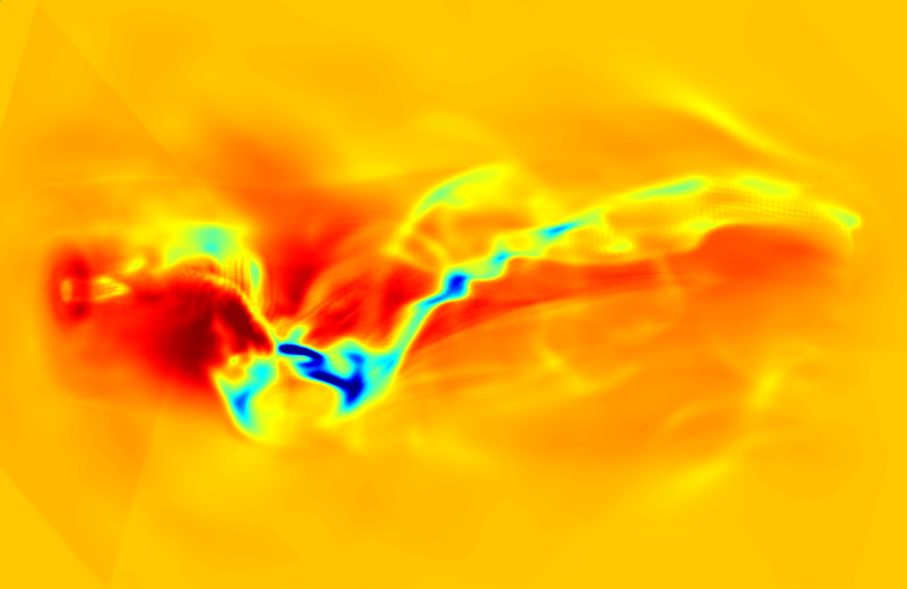
Line-of-sight integration of ∇ · v in a jet launched magnetocentrifugally from the left face (red ring with orange centre). The jet propagates from left to right and follows a helical path as it succumbs to higher-order modes of the Kelvin-Helmholtz instability. Details in Ouyed, Clarke, & Pudritz.
Next slide in 10 seconds...
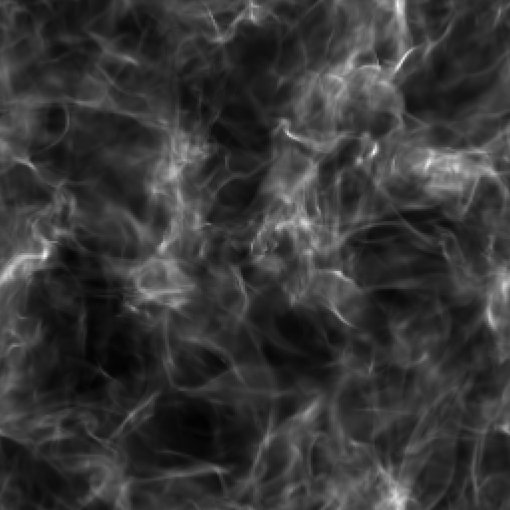
Line-of-sight integration of the magnetic energy density in a supersonic (M=10), super-Alfvénic turbulent medium using the Consistent Method of Characteristics (CMoC) in dzeus36 on a 2563 grid.
Return to first slide in 10 seconds...
Despite growing pressure from deans and colleagues to "tone down" my standards, I always believed students taking my courses actually wanted to learn physics. As such, the bar I set was based on competency in standard physics texts and not how to main- tain enrolments. More than once, I was accused of being a "self-appointed gate-keeper" which may have played a part in my being denied emeritus status when I retired.
This is the teaching philosophy I articulated to prospective students and is how I conducted all my courses while at SMU. A summary of my student evaluations is here.
With its "back-to-basics" philosophy, this poster – which hung across from my office for 15 years – attracted the attention of many students and the ire of some of my colleagues. With thirty years of teaching experience, I stand by each and every item listed on this poster.
Download an 8.5" × 11" or a 3' × 4' version of this poster.
Below are listed most of the courses I taught at SMU between 1993 and 2023. Selected resources from some of my courses (e.g., my primers for PHYS 3210) are available from my "document bar".
| ASTR 5700 | Magnetohydrodynamics |
PHYS 3200 | Mathematical Methods in Physics I |
|
| PHYS 1100 | University Physics I |
PHYS 3201 | Mathematical Methods in Physics II |
|
| PHYS 1101 | University Physics II |
PHYS 3210 | Computational Methods in Physics |
|
| PHYS 2200 | Introduction to Mathematical Physics |
PHYS 3350 | Thermal Physics |
|
| PHYS 2300 | Vibrations and Waves |
PHYS 3500 | Quantum Mechanics I |
|
| PHYS 2301 | Analytical Mechanics |
PHYS 4380 | Fluid Dynamics |
|
| PHYS 2302 | Mechanics I |
PHYS 4500 | Quantum Mechanics II |
|
| PHYS 2303 | Mechanics II |
|
I'm happy to share with anyone, particularly former students now looking to teach courses themselves, any of my lecture materials. Simply drop me an e-mail with your request.
One of my favourite classes to teach was Thermal Physics, a one-semester course combining Thermodynamics and Statistical Mechanics. Spanning three centuries, the development of thermal physics provides a unique window into the history of physics as well as the science, allowing for a different teaching approach than most physics courses.
To put faces to history, I created a 3' × 4' poster (or this 8.5" × 11" version) with the 18 scientists most responsible for its development. As my course unfolded, matching each new idea with a face made the story a little more personal.
To the instructor developing their own course, I offer this warning: many physicists including authoritative sources don't understand Carnot's theorem! My rationale is in this document which was prepared for my students.
Finally, one reason I loved this course so much was the "a-ha" moment halfway through when Boltzmann's equation, S = k ln w, is introduced. This is where entropy is finally explained and where thermodynamics is established as a bona fide branch of physics. Done right, this moment can elicit gasps from the class; don't miss out!
In 2007, I chaired a committee to revise, rationalise, and enrich our curriculum so that SMU (astro)physics students would be competitive with students from any other university. Expectations, prerequisites, and outcomes for each course were defined and described on this webpage for faculty and student reference. While initially endorsed strongly by the department, it fell out of favour as being "too tough" and "responsible for declining enrolment". It was replaced by a "kinder, gentler" curriculum which, truth be told, did little if anything to boost enrolments.
I leave this web connection here as a model for any small department with limited faculty who genuinely wish to provide a basic yet rigorous curriculum for their students. It worked well for us for several years until it was abandoned by many – but not all – of my colleagues for what I thought were the misguided reasons given above.
A first course in |
MAGNETOHYDRODYNAMICS |
|
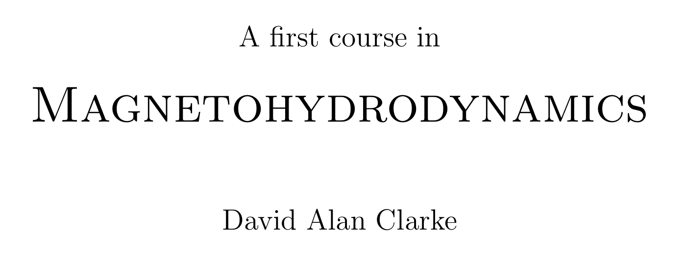 |
sample of text including front pages, parts of chapters 1 and 6, and index |
|
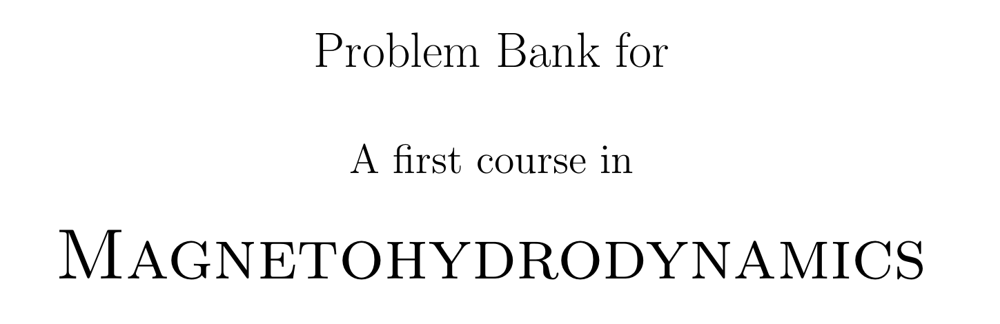 |
problem bank for AfciMHD (297 pages, available to instructors from CUP's website with password) |
|
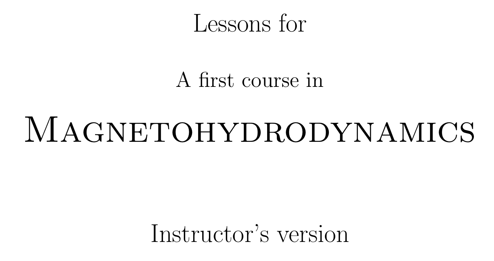 |
sample of instructor's version of the "flipped-style" lesson plans, including front pages and lessons 1 and 2 |
|
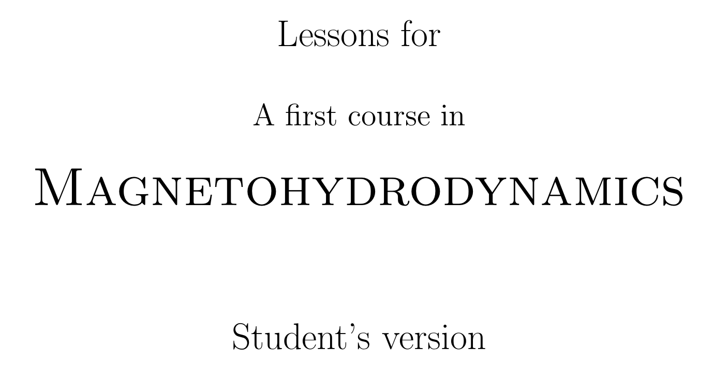 |
all 36 lesson plans for the instructor and student (328/289 pages, available to instructors from CUP's website with password, click on "Resources") |
I am the developer of the widely used magnetohydrodynamics (MHD) computer code, ZEUS-3D, downloaded and used by hundreds of investigators worldwide. My own interest in computational MHD is performing multi-dimensional simulations of astrophysical jets.
You can read more about my research interests here and see a partial list of my publications here.
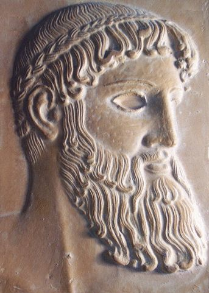 |
ZEUS-3D website for gallery, description, user/installation guides, and downloading the code (version 3.6). |
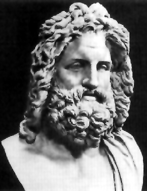 |
AZEuS (AMR+ZEUS-3D) website for gallery and description. The code is not yet ready for distribution. |
EDITOR is my source-code manager for ZEUS-3D and AZEuS. Version 2.2 and user manual available for download. |
I am pleased to say that every student who finished their degree with me moved on successfully to the next logical stage of their academic career.
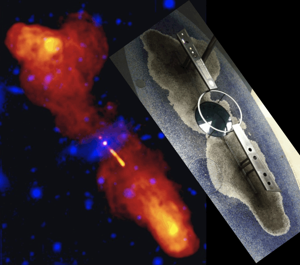
Early in my career, I dabbled in radio astronomy using the VLA to observe radio galaxies such as 3C 219 (above left; image courtesy Alan Bridle, NRAO). You might imagine my surprise when, about ten years later, I happened upon our data immortalised in tile on the Hayden Planetarium floor (insert; image courtesy of Jodi)!
Links to the PDFs of primers and manuals I have written or contributed to are given below. For documents authored solely by me, permission is granted to use and distribute freely for non-profit and academic purposes only, provided the original authorship and affiliation are retained. Those wanting any of the LATEX files should contact me directly.
Did someone say bar?
| A primer on MHD | A quick introduction to Hannes Alfvén's masterpiece. |
| A primer on ZEUS-3D | For those who want a quick introduction to my research code. |
| A primer on Tensor Calculus | Something I prepared for my own edification. |
| FORTRAN77 primer | A quick start-up guide for first-time programmers in FORTRAN. |
| Unix primer | Exceedingly basic introduction to unix for first-time users. |
| DBX primer | Beginner's guide to debugging with Sun's DBX. |
| LATEX primer | An augmented version of David Wilkins' excellent primer. |
| Eclipse photography for mortals | How I prepared for, took, and processed my photos from eclipse24. |
| |
| dzeus35 user manual | User manual for ZEUS-3D, version 3.5. |
| dzeus36 user manual | User manual for ZEUS-3D, version 3.6. |
| edit22 user manual | User manual for EDITOR, version 2.2. |
| |
|
Lab manual and answer guide for a two-semester first year calculus-based course (e.g., HRW) no longer in use at SMU for reasons too tedious to explain. If anyone else can use them, I can provide the LATEX files and figures. |
Offered here is a collection of short programs and coding snippets of possible use. All are available open source, as is, and without any expressed or implied warrantee. Those interested in my research codes such as ZEUS-3D should visit my Research slide.
All codes are bundled into compressed tarballs. Once downloaded and placed in the desired directory, issue the command: tar xvzf ---.tar.gz, then follow the directions in the README file in the newly created directory.
| 1dplot.tar.gz | cheap-and-cheerful self-contained library to generate publication-quality 1-D postscript plots |
| fans.tar.gz | calculate and plot MHD rarefaction profiles for a given upwind state |
| mhdrmn.tar.gz | an exact evolutionary MHD Riemann solver including all switch-on/off waves |
Despite my background in algorithm development and supercomputer simulations, I remain a bit of a luddite. I'm not a blogger, I don't do Facebook, and I most certainly don't tweet. This web-page, then, represents my first and only foray into "social media".
Born in Charlottetown, Prince Edward Island to Sheila (née Davison; Charlottetown) and Alan Clarke (Halifax) in 1958, I was raised in Ontario and did my B.Sc. at Queen's University at Kingston (Honours Physics, 1981). My M.Sc. (Thesis: "Two-Dimensional Collapse of a Rotating Interstellar Cloud", 1984) was also from Queen's under Dick Henriksen. My Ph.D. (Dissertation: "A Search for the Effects of Active Magnetic Fields in Extragalactic Radio Sources", 1988) was from the University of New Mexico under Jack Burns and Mike Norman (LANL, NCSA).
|
|
I was a post-doctoral fellow at the NCSA (U. Illinois) from 1988–1992 under Mike Norman, and a post-doctoral research associate at the Harvard-Smithsonian CfA from 1992–1993 under Ramesh Narayan.
In 1993, I was appointed an assistant professor at Saint Mary's University, promoted to associate professor in 1995, gained tenure in 1996, and promoted to full professor in 2003. I organised a significant international conference, the '12th Kingston meeting': Computational Astrophysics in 1996, co-founded the Institute for Computational Astro- physics at SMU in 2002, and was a co-founder of the Atlantic Computational Excellence Network (ACEnet) in 2004. During my first sabbatical leave in 2000–2001 , I was appointed astronome invité at l'observatoire de Grenoble. My tenure at Saint Mary's ended upon my retirement in September, 2023. You can view my CV here.
I went to the U.S. in 1984 single, came home in 1993 with a family. My wife of 37 years (as of Oct. 2024), Jodi Asbell-Clarke, hails from North Haven, CT and is currently a senior science curriculum developer at a non-profit educational institute in Cambridge MA. My son, Dane, born in Albuquerque NM in 1989, received his BIT from Carleton/Algonquin in 2011 and is a graphic artist. My daughter, Alison, born in Urbana IL in 1992, completed her political science degree from the University of Guelph in 2014 and is currently the Atlantic Organiser for a major federal political party. Both live in Halifax.
Both of my parents have passed. I have two brothers; Peter Clarke lives in the Toronto area with his wife Mayr, and Gordon Macdonald lives on Vancouver Island with his wife Nicky. My step-mother, Adaline O'Gorman, lives in Victoria and her two children—my step-siblings—live in BC as well; Taryn O'Gorman on Vancouver Island and Iain with his wife Erin on the mainland, north of Vancouver.
I offer here a few snippets of "pre-historic" comedy, all from well before the arrival of Gen-Z and most of the Millennials! They're timeless, they're clean (if not entirely "woke"), and they're fun; enjoy!
Many from my generation remember the Carol Burnett Show as a one-of-a-kind. In the few years SNL has been great, it has occasionally come close. A few of my favourite sketches include... |
|
And speaking of SNL, here are a few of my favourite characters: Dana Carvey's "Church lady", Martin Short's "Ed Grimley", and Kristen Wiig's "Kathie Lee Gifford". |
|
One of my Dad's all-time favourites was Victor Borge (1909–2000). His "phonetic punctuation" sketch is a classic. |
|
All the world's daft, save thee and me. And lately I've been wondering about thee.
|
My Nana's paraphrasing of Robert Owen's (1771–1858) utterance in 1828 on severing business relations with his partner William Allen: All the world is queer save thee and me, and even thou art a little queer. |
If, in the last few years, you haven't discarded a major opinion or acquired a new one, check your pulse. You may be dead.
|
American poet Gelett Burgess (1866–1951). |
Brag of your country. When I am abroad, I brag of everything that Nova Scotia is, has, or can produce and, if they beat me at everything else, I say: `How high do your tides rise?'.
|
Joseph Howe (1804–1873); journalist, politician, poet, referring to the 16 m tides in the Bay of Fundy. It is because of his success at defending himself against a charge of seditious libel in 1835 that Canada has a free press. |
Figure out who you are, then do it on purpose.
|
Dolly Parton. |
You don't really understand something until you can compute it.
|
Computational astrophysicist Michael L. Norman, on numerous occasions. |
Numquam ponenda est pluralitas sine necessitate; Plurality must never be posited without necessity.
|
William of Ockham (1287–1347), though versions of "Occam's Razor" can be traced to Ptolomy (90–168 AD): We consider it a good principle to explain the phenomenon by the simplest hypothesis possible. Modern versions include: The simplest explanation is usually the best. |
If I have seen further than others, it is by standing upon the shoulders of giants.
|
Sir Isaac Newton (1642–1727). |
I do not know what I may appear to the world, but to myself I seem to have been only like a boy playing on the sea-shore, and diverting myself in now and then finding a smoother pebble or a prettier shell than ordinary, whilst the great ocean of truth lay all undiscovered before me.
|
attributed to Sir Isaac Newton shortly before his death in 1727. |
The most incomprehensible thing about the Universe is that it is comprehensible.
|
Albert Einstein (1879–1955). |
He must be a dull man who can examine the exquisite structure of a comb, so beautifully adapted to its end, without enthusiastic admiration.
|
Charles Darwin (1809–1882) in his On the Origin of Species, when introducing the role of instinct in the construction of "humble-bee" hives. |
We have to learn again that science without contact with experiments is an enterprise which is likely to go completely astray into imaginary conjecture.
|
Hannes Alfvén (1908–1995), the father of Magnetohydrodynamics. |
I am an old man now, and when I die and go to heaven, there are two matters on which I hope for enlightenment. One is quantum electrodynamics and the other is the turbulent motion of fluids. About the former, I am really rather optimistic.
|
Sir Horace Lamb (1849–1934), in an address to the British Society for the Advancement of Science, 1932. |
Prediction is very difficult, especially about the future.
|
Niels Bohr (1885–1962), often (but incorrectly) attributed to Yogi Berra. |
Those who are not shocked when they first come across quantum theory cannot possibly have understood it.
|
Niels Bohr. |
I cannot seriously believe in quantum theory because it cannot be reconciled with the idea that physics should represent a reality in time and space, free from spooky actions at a distance.
|
Albert Einstein, 1948, on his favourite critique of quantum mechanics where, so the theory requires, a measurement at location B can instantaneously have an influence at location A. On this he had stated the year before: My instinct for physics bristles at this, and in 1935 he wrote: No reasonable definition of reality could be expected to permit this. To Niels Bohr's quotation, Albert Einstein was certainly shocked! |
I have stated previously that the arrow of time should follow the arrow of universal expansion, and if the universe should start to collapse, we'd all start getting younger. I was wrong.
|
Stephen Hawking (1942–2018) in an address to the XIII Texas Symposium on Relativistic Astrophysics, Chicago, 1986. |
Only two things are infinite: the universe and human stupidity, and I'm not sure about the former.
|
Albert Einstein. |
To hell with the expense; give the canary a second seed!
|
My father (Alan Keith Clarke, 1932–2019) on justifying a small (or maybe not-so-small) extravagance. |
I haven't an inkling, and it takes a thousand inklings to make a clue!
|
Origin unknown. While it appears in the 1997 novel Larry's Party by Carol Shields, it was my father's response to unanswerable questions since long before then. |
Freedom has to be armed no worse than tyranny.
|
Ukrainian President Volodymyr Zelenskyy. |
And I find it kinda funny, I find it kinda sad; the dreams in which I'm dying are the best I've ever had; I find it hard to tell you, 'cause I find it hard to take; when people run in circles, it's a very very mad world, mad world.
|
from Mad World by Roland Orzabal and Curt Smith, Tears for Fears (1982); covered in 2001 by Michael Andrews and Gary Jules for the soundtrack of Donnie Darko. |
Space to place documents temporarily for uploading.
Looking for textbook support? Go to my AfciMHD slide. ZEUS-3D or AZEuS? Go to my Research slide. Primers and manuals? Go to my Document bar. |
|
Background: ZEUS-3D simulation showing the magnetic energy density in a super-Alfvénic turbulent medium. |
Last updated by DAC, Oct. 31, 2024 |